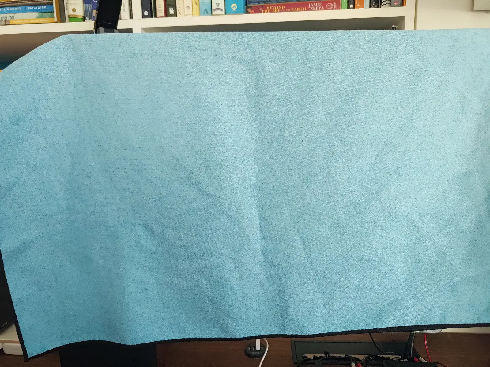

The mission & first day
The mission: Change a creation tool to be used by a different audience. For example, making Photoshop beginner friendly.
The first day: We collectively wanted to focus on accessibility in this competition. Opportunity arose when we used a keyboard to navigate around our brainstorming whiteboard. It was so unreliable tabbing through content.
That got us thinking: how do blind and low vision (BLV) users use these visual-based whiteboarding tools?
Early discovery phase: Keyboard navigation with FigJam
Research
Secondary research pointed to how cognitively demanding it was for BLV users: they’re in a team discussion, navigating through the board with a screen reader, and contributing to the board. All simultaneously.
We hosted a mock event planning meeting using Miro. I used a screen reader and a towel over my monitor and documented my experience using Miro while visually deprived.
While our simulation is not in any way representative of how blind users might use Miro and screen readers, the exercise helped me gain empathy more than anything. We read the papers, but experiencing it first-hand made me realize:
oh, this is a big problem.
From a workplace accessibility field study.
“One thing I learned when I was working with sighted people is they would talk while I was still listening [to my screen reader]… I can’t listen to two streams at the same time."
- Catherine
My crude method to restrict my senses

Our solution
We created an accessibility onboarding experience for first-time BLV Miro users with a focus on toolbar customization. The user can start with a simple 6-tool toolbar to gradually learn Miro and then create their own custom toolbar aligned with their needs.
Adaptive Interfaces Prototype
Visit websiteWe agreed that tackling this big problem in a small way would help us design something feasible and grounded in research. We leaned into customization to reduce cognitive overload of learning so many tools and to accommodate the differing needs of BLV users.
From a screen reader study.
“Being able to choose the information felt important and meaningful because I had more autonomy and control over the information I wanted; it would save time not having to listen to information I didn’t need or care about."
- Participant C2
Prototyping with AI
I used AI (Claude Code) to prototype our website as a Figma prototype would limit our ability to showcase how it would be used by a screen reader.
I designed high-fidelity static pages in Figma and sent them to Claude with instructions on the interaction design. Iterations on ARIA use, alt-text, and focus order were made to align the prototype to how our target audience would use Miro.
Screen reader accessibility iterations
Storytelling (feat. Linda)
I drafted a persona right after our research concluded. We used Linda in mentor critiques to give backstory on the downsides of Miro and how our proposed solutions address those pain points. She was also effective in our video pitch.
Linda kicks off our pitch video
![User persona card for 'Linda', a Backend Software Developer, illustrated with an orange avatar wearing sunglasses. Background: Linda works in an agile team of five on fraud systems backend and struggles to participate in virtual scrum meetings using Miro, which limits her ability to work with teammates and stifles her professional development. What she's tried so far: her PM and team accommodate her by following Miro's accessibility best practices and verbally describing what they reference on the board. Frustrations: writing down her thoughts is time consuming; relying on a teammate to write for her; navigating the interface is unreliable with a screen reader; inaccurately positioning elements on the board. Her needs: to easily collaborate with her team during brainstorming sessions, and to comprehend teammates' contributions so she can stay informed and meaningfully contribute.](../../img/design/adaptive-interfaces/persona-linda.webp)
What I learned
- Making designs accessible brings more meaning to my work. This is something I want to continue in future work.
- After vibe coding for the first time, I now better understand AI’s value in design communication: it’s a prototyping tool just like Figma, to be used in certain situations based on your project’s solution. It also lets me spend more time designing and less on prototyping.
- While our research was lengthy, I don’t imagine how our project would have survived without it. Linda wouldn’t exist and our design decisions would be based off vibes.